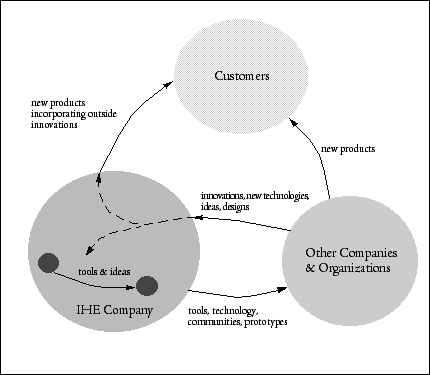
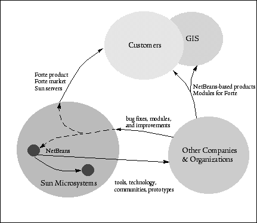

|
Previous Table of Contents Up Next An Example: The Innovation Happens Elsewhere StrategyThe business reasons for open source as presented tend to have a more tactical focus. Let's now look at an example of how open source might support a larger business strategy. Most companies are not large enough to influence the direction of their own markets, and few companies are able to design products that truly serve their customers. Most companies find they need to fine-tune designs and products over a series of releases. Some companies use time to introduce products: The Saturn car company started by introducing inexpensive but high-value cars that appealed to young adults just starting out in their careers, and, while learning the tastes and values of that generation, Saturn has introduced new models that reflect the increasing affluence of its core customer base. This is an example of using the world outside the corporation as a source of innovation. Software companies using open source can perhaps exploit this strategy in its most pure form. So, what is the strategy? To simplify the discussion, let's consider only companies that produce technology products. The Innovation Happens Elsewhere (IHE) strategy begins by recognizing where the company's proprietary value lies. Everything outside this inner circle of protected ideas and technology is available for instigating outside innovation beneficial to the company. The primary goal of the strategy is to increase the number of potential customers--that is, the size of the market available to the company. To do this, the IHE company tries to create more products in the market that either are enablers for the products the IHE company sells or form an aftermarket for them. Rather than trying to accomplish this alone, the IHE company tries to encourage other companies or organizations to do this work--but for their own purposes. The impetus for companies to do this comes from tools, technology, communities, and prototypes that the IHE company provides. By opening up part of itself to the outside, the IHE company can provide gifts that trigger the gift-economy effect: technology; tools, and prototypes that are of high value to outside companies and organizations and that trigger them to work in areas important to the IHE company; and communities where others can work within a culture that supports the vision of the IHE company (see Figure 4.1). Let's break this down a little.

FIGURE 4.1. The Innovation Happens Elsewhere strategyGiving gifts of technology and tools initially spurs outside individuals to work on or with those gifts for their own benefit--perhaps one of the tools is useful to a software developer for one of his or her home projects. Later, that developer might bring the tool into his or her company, where colleagues start to use it for their own purposes. Because the tool was a gift (and perhaps its source is available), individuals and their companies send bug fixes, extensions, modules, and ideas back to the IHE company. The gift has been picked up--for selfish purposes--but it stimulates a gift in turn of work that is of value to the IHE company directly, which takes those tools, technologies, prototypes, and ideas back and uses them to enhance its own products. In the open-source realm, this is the fundamental expected payback for opening up software source. For the IHE company, this is only the beginning. Next, an outside company using gifts from the IHE company recognizes that these tools, technologies, and prototypes can be combined with its own technology to produce products at lower cost, at less risk, and of great value to their customer base. Again, this is done for selfish reasons, but such outside companies are, by doing this, contributing to expanding the customer base for the IHE company. Sometimes a company or organization will think of an application or variation of the gift that will open it up to entirely new and unexpected markets. This is the sort of return gift the IHE strategy can provide. Even further, the IHE company, by creating, building, and maintaining a set of communities around these gifts, can engage in serious conversations with outside companies, organizations, and individuals. Such conversations not only can improve the IHE company's products, designs, and directions, but also provides the IHE company with an opportunity to demonstrate leadership and vision, thereby putting it in a position to strongly influence the direction and structure of the competitive landscape. Because this is done in a context of gift-giving, culture exchange, and conversations, this is leadership and seduction, not control and power. If the IHE company exhibits learning in response to these communities, other members will continue to give gifts, work with the company, and help it maneuver through difficult competitive and market situations. Communities are also a way to tell stories to the community while minimizing the effects of cynical write-off. When a company puts out white papers, advertising, and other public relations materials, the audience is likely to discount as hype statements made there. But within a community, where developers and engineers are talking to each other, the messages can be both smaller--too small for press releases--and larger: global visions and proposals for new directions couched in design and other engineering statements. By valuing the comments and ideas from outside community members--by showing respect--the IHE company can create a channel unlike any other. The ability to communicate through communities such as this means that the IHE company can nudge the market in directions that play to its strengths. And by both demonstrating great innovation and respecting the innovation of others and by providing just the right gifts, the company can increase the size of its market and tune itself and its informal "partners" to that market, which is itself tuned through the vision of the company. That is, the market, the IHE company, and companies in the virtuous cycle of innovation co-evolve under the partial direction or influence of the IHE company. The IHE company takes direct advantage of the returned gifts from others, both by using them in its own products and by using them to help its internal operations. The IHE company puts itself in the best position when it embraces at all levels the philosophy of Innovation Happens Elsewhere with people in the company always looking inside and outside the company for innovation they and their groups can use. There are several keys to using this strategy. The first key is understanding and isolating the true proprietary value and technologies of the company. The more accurately this is done, the better able the company is to use its gifts and thrive. If what's proprietary and valuable to customers is too small, the company will have a hard time surviving as others crowd into its space. If what's judged proprietary and of value is too large--or too much of what the company makes or works on--then there will be few gifts available to get the cycle of innovation going. The second key is the confidence that your organization can engineer products well and quickly enough to stay ahead of competition. Microsoft, for example, does not believe it has enough of an engineering edge over competitors to do other than hold all its source code proprietary. Perhaps this is why it tries to combat open source rather than embracing it. The third key is a company culture that can embrace and celebrate innovations wherever they occur. In a sense, this is confidence and enthusiasm for ideas, but it is also respect and the right balance of pride and humility. Some organizations seem to fear ideas that originate from outside. Such organizations cannot use Innovation Happens Elsewhere. Open Source and Innovation Happens ElsewhereCompanies that develop software can use open source as a basis for sharing tools, technology, and prototypes, and communities can be built around open-source projects. In this case, it's important to recognize both that such communities need to succeed as software development efforts and that the goal for such communities is to fuel the IHE feedback cycle. Sun Microsystems's NetBeans open-source project is a good example of a community built to support the IHE strategy (see Figure 4.2). Recall that NetBeans is an open-source platform for building an IDE specifically for the Java language. Sun gets improvements from the open-source community and builds a proprietary version of NetBeans--called Forte for Java (now Sun Java Studio)--which is a tested version of NetBeans extended with proprietary modules. Other companies use the NetBeans technology in-house and as part of other products. Forte for Java is in addition positioned as a platform on which other companies can sell plug-in modules--that is, Forte for Java is the basis of a marketplace.

FIGURE 4.2. Sun's NetBeans IHE strategyThe effect is to increase the population of Java language programmers both by providing tools for those developers directly and through other companies building on the NetBeans platform. This way, not only is Sun Microsystems building the Java community, but so are other companies and individuals in the NetBeans community. Sun sells an IDE derived from NetBeans, but, most important, Sun sells server hardware that runs Java particularly well. Further, Java developers within Sun use NetBeans and Forte for their own work. An unexpected innovation happened when a group removed the Java-specific modules from the NetBeans IDE and replaced them with mapping, visualization, and analysis modules in order to build a modular environment for spatial analysis and visualization. This potentially opens up a future geographic information systems (GIS) market to Sun, a market not originally contemplated. Lessons from the IHE StrategyThere are many advantages to using open source, but being able to engage the Innovation Happens Elsewhere strategy is especially compelling. Not only does it build the market size, but the tactics to make it work help companies that use it get to better products faster by directly involving the customer base in their design. Through direct conversations with customers, there is reduced guesswork in gathering market requirements. Moreover, there are some operational efficiencies to be gained through better testing, community-based support, and some significant product contributions. Sometimes--no, usually--a surprise will happen; an innovation or application of the ideas and technology will come along that you have never dreamed of, never heard of, or couldn't imagine, done by a group or individual you have never heard of. And it could be a pivotal market for your company or could change how you view and develop your original technology. What is most stunning, however, is the difference in the feel of companies that truly engage with their communities of customers, partners, and competitors. Morale is boosted, progress is constant, and it simply feels like something good is always happening.
|
|||
|

|